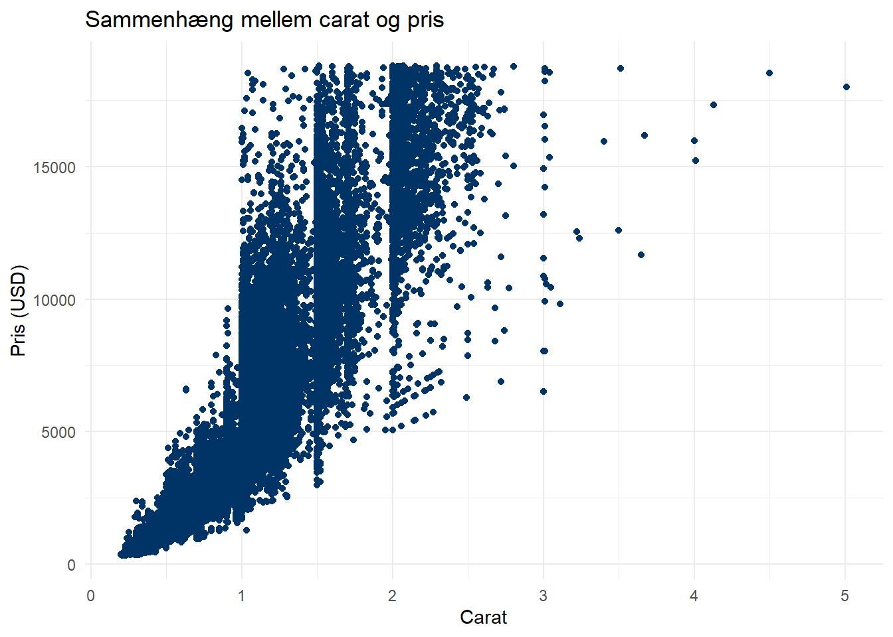

library(ggplot2)
df <- diamondsAflevering 3: forslag til besvarelse
Følgende er et forslag til besvarelse af den tredje ud af de seks obligatoriske afleveringer i faget. Brug det til at sammenligne med dine egne svar og diskutér med dine medstuderende.
Opret et script og åben data
Start med at åbne RStudio ved at klikke på dit R-project. Opret dernæst et nyt script og gem det i samme mappe, som dit R-project. Du kan f.eks. kalde scriptet Aflevering_3.
Brug
getwd()til at sikre dig, at du arbejder i den rigtige mappe på computerenIndlæs det indbyggede dataset
diamondsfraggploti R i et objektdf:Brug funktionen
names()til at se, hvilke variable datasættet indeholdernames(df)[1] "carat" "cut" "color" "clarity" "depth" "table" "price" [8] "x" "y" "z"
1 Korrelationer
Følgende opgave er teoretisk. Du skal ikke bruge R, til at besvare opgaven.
a) Beskriv med dine egne ord, hvad begrebet korrelation betyder
Korrelation er et udtryk for samvariationen mellem to variable, dvs. hvordan bevæger den ene variabel sig, når den anden bevæger sig. Man taler også om, at der er en sammenhæng mellem to variable, når de korrelerer. Dog er det vigtigt at skelne mellem korrelation (sammenhæng) og kausalitet (årssagssammenhæng). Bare fordi to variable korrelerer betyder det ikke, at der er en kausal sammenhæng mellem dem.
b) Beskriv med dine egne ord, hvad forskellen er på en positiv og en negativ korrelation
Hvis en variabel \(x\) stiger, når en anden variabel \(y\) stiger, er der tale om positiv korrelation mellem \(x\) og \(y\). Hvis \(x\) falder, når \(y\) stiger, er der tale om negativ korrelation.
2 Visualisering af korrelation
I følgende opgave skal du bruge R.
a) Lav et scatterplot over variablene carat som x-variabel og price som y-variabel
library(ggplot2)
ggplot(df) +
aes(x = carat, y = price) +
geom_point(color="#003366") +
labs(
title = "Sammenhæng mellem carat og pris",
x = "Carat",
y = "Pris (USD)"
) +
theme_minimal()
b) På baggrund af plottet, mener du, at der er korrelation mellem carat og pris? Og i så fald, er den så positiv eller negativ?
Plottet tegner et tydeligt billede af, at når diamanter stiger i carat, så stiger de også i pris. Vi kan stort set tegne en linje igennem punkterne i grafen, der starter i 0 og går mod øverste højre hjørne. Der er altså en positiv korrelation/sammenhæng mellem pris og carat på diamanter. Jo højere carat desto dyrere er de.
3 Korrelationskoefficienter
I følgende opgave skal du bruge R.
a) Udregn den passende korrelationskoefficient mellem variablene carat og price givet deres måleniveauer
Givet at carat og pris begge kan betragtes som intervalskalerede variable bruges Pearsons r korrelationskoefficienten, som tager en værdi mellem -1 og 1.
cor.test(df$price, df$carat)
Pearson's product-moment correlation
data: df$price and df$carat
t = 551.41, df = 53938, p-value < 2.2e-16
alternative hypothesis: true correlation is not equal to 0
95 percent confidence interval:
0.9203098 0.9228530
sample estimates:
cor
0.9215913 b) På baggrund af korrelationskoefficienten, mener du så, at der er en korrelation mellem carat og pris? Og i så fald, er den svag, moderat eller stærk?
Pearsons r koefficienten måler 0.92. Der er altså tale om en meget stærk positiv sammenhæng mellem pris og carat, ligesom vi så i plottet. De to variable er faktisk tæt på at være perfekt korrelerede (hvis koefficienten havde taget værdien 1).
4 T-test for forskelle på to gennemsnit
I følgende opgave skal du bruge R.
Du skal nu teste, om der er en signifikant forskel på den gennemsnitlige pris på diamanter, der har cut “Premium” og cut “Ideal”. Derfor skal du først lave et datasæt, hvor du kun beholder de diamanter, der har cut “Premium” eller “Ideal”.
a) Kør nedenstående kode for at gemme et nyt datasæt der hedder diamonds_filtered, som kun indeholder “Premium” og “Ideal” diamanter:
library(dplyr)
diamonds_filtered <- diamonds %>%
filter(cut %in% c("Ideal", "Premium"))b) Du skal nu igang med t-testen. Start med at opstil hypoteser for en t-test for forskelle på to gennemsnit
H0: Der er ingen signifikant forskel på gennemsnitsprisen for diamanter med cut “premium” og “ideal”.
H1: Der er en signifikant forskel på gennemsnitsprisen for diamanter med cut “premium” og “ideal”.
c) Gennemfør t-testen i R. Husk at brug datasættet diamonds_filtered
# Udfør t-test
ttest_resultat_bivariat <- t.test(price ~ cut, data = diamonds_filtered)
# Opret en tabel med resultaterne
(ttest_tabel_bivariat <- data.frame(
Parameter = c("Gennemsnit Gruppe 1",
"Gennemsnit Gruppe 2",
"Test-statistik",
"P-værdi",
"Nedre konfidensinterval",
"Øvre konfidensinterval",
"Frihedsgrader"),
Værdi = c(
round(ttest_resultat_bivariat$estimate[1], 2),
round(ttest_resultat_bivariat$estimate[2], 2),
round(ttest_resultat_bivariat$statistic, 3),
sprintf("%.4f", ttest_resultat_bivariat$p.value),
round(ttest_resultat_bivariat$conf.int[1], 3),
round(ttest_resultat_bivariat$conf.int[2], 3),
round(ttest_resultat_bivariat$parameter, 1)
)
)) Parameter Værdi
1 Gennemsnit Gruppe 1 4584.26
2 Gennemsnit Gruppe 2 3457.54
3 Test-statistik 24.918
4 P-værdi 0.0000
5 Nedre konfidensinterval 1038.088
6 Øvre konfidensinterval 1215.344
7 Frihedsgrader 26552.2d) Forklar på baggrund af p-værdien, hvilken hypotese tror du på. Er der en signifikant forskel på den gennemsnitlige pris for diamanter, der har cut “premium” og diamanter, der har cut “ideal”?
P-værdien for testen er 0,0000 og altså under den kritiske grænse 0,05. Derfor forkastes nulhypotesen H0 og tror på alternativhypotesen: der er en signifikant forskel på gennemsnitsprisen for diamanter med hhv. cut “premium” og “ideal”. Premium diamanter er signifikant dyrere end “ideal” diamanter.
Hvis du er i tvivl om, hvilken kategori (premium eller ideal) der er hhv. “gruppe 1” eller “gruppe 2”, så kan du køre det originale test-output og tjekke efter:
ttest_resultat_bivariat
Welch Two Sample t-test
data: price by cut
t = 24.918, df = 26552, p-value < 2.2e-16
alternative hypothesis: true difference in means between group Premium and group Ideal is not equal to 0
95 percent confidence interval:
1038.088 1215.344
sample estimates:
mean in group Premium mean in group Ideal
4584.258 3457.542 5 \(\chi^2\)-test for uafhængighed
I følgende opgave skal du bruge R.
Du skal nu teste, om der er en sammenhæng mellem diamanters cut og farve med en \(\chi^2\)-test for uafhængighed. Du skal altså teste, om der er en statistisk signifikant sammenhæng mellem variablene color og cut.
a) Opstil hypoteser for en \(\chi^2\)-test for uafhængighed
H0: Der er ingen sammenhæng mellem variablene color og cut (uafhængighed)
H1: Der er en sammenhæng mellem variablene color og cut
b) Gennemfør testen i R
library(dplyr)
library(janitor)
# Udfør chi²-test
chi_resultat_bivariat <- df %>%
select(color, cut) %>%
na.omit() %>%
tabyl(color, cut) %>%
chisq.test()
# Opret en data frame med chi²-testens resultater
(chi_tabel_bivariat <- data.frame(
Parameter = c("Chi²-statistik",
"Frihedsgrader",
"P-værdi"),
Værdi = c(
round(chi_resultat_bivariat$statistic, 3),
chi_resultat_bivariat$parameter,
sprintf("%.4f", chi_resultat_bivariat$p.value)
))) Parameter Værdi
X-squared Chi²-statistik 310.318
df Frihedsgrader 24
P-værdi 0.0000c) Forklar på baggrund af p-værdien, hvilken hypotese tror du på. Er der en signifikant sammenhæng mellem diamanters cut og farve?
P-værdien for testen er 0,000 og dermed under den kritiske grænse på 0,05. Vi forkaster derfor nulhypotesen H0 og vi tror på alternativhypotesen: der er en signifikant sammenhæng mellem variablene cut og color. Der ser altså ud til at være en sammenhæng mellem farve og cut på diamanter.